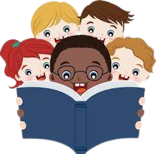

A Importância da Leitura
Tanto a leitura quanto a escrita são práticas sociais de suma importância para o desenvolvimento da cognição humana. Ambas proporcionam o desenvolvimento do intelecto e da imaginação, além de promoverem a aquisição de conhecimentos. Dessa maneira, quando lemos ocorrem diversas ligações no cérebro que nos permitem desenvolver o raciocínio. Além disso, com essa atividade aguçamos nosso senso crítico por meio da capacidade de interpretação. Nesse sentido, vale lembrar que a “interpretação” dos textos é uma das chaves essenciais da leitura. Afinal, não basta ler ou decodificar os códigos linguísticos, faz-se necessário compreender e interpretar essa leitura.
Os benefícios da leitura
Muitos são os benefícios que a leitura proporciona: desenvolvimento da imaginação, da criatividade, da comunicação, bem como o aumento do vocabulário, conhecimentos gerais e do senso crítico. Além desses benefícios, com a leitura exercitamos nosso cérebro, o que facilita a interpretação de textos e leva à maior a competência (habilidade) na escrita. Ao ler o indivíduo adquire maior repertório, ampliando e expandindo seus horizontes cognitivos. Para além disso, estudos apontam que o ato de ler é muito prazeroso na medida em que reduz o stress ao mesmo tempo que estimula reflexões. Por esse motivo, a leitura deve ser incentivada desde a educação primária. Incentivar os filhos pequenos em casa e criar hábitos são chaves importantes para que as crianças desenvolvam o gosto pela leitura. Uma dica é levá-los nas bibliotecas, livrarias ou mesmo contar histórias para eles. Para o escritor brasileiro Monteiro Lobato: "Um país se faz com homens e livros".
